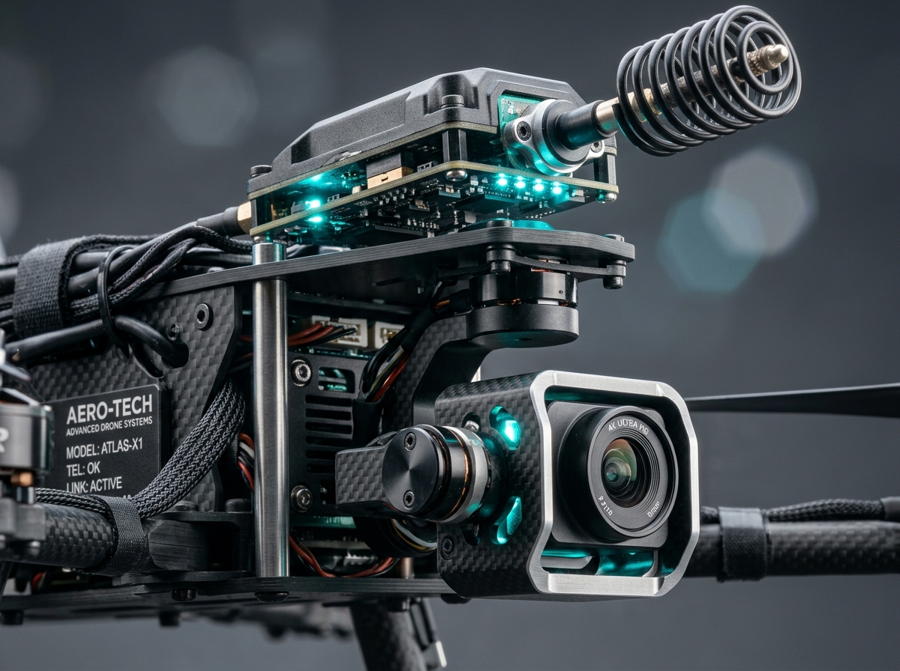

PRESENTATION
4622
Team Members
Ahsan
Akbari
Project Overview
This project integrates and validates the RLFR (Reinforcement Learning Fast Routing) protocol from IEEE Transactions on Communications (Nov 2024) inside the UavNetSim discrete-event simulation platform.
It comprehensively evaluates RLFR against nine existing ad-hoc routing protocols (Greedy, DSDV, GRAD, OPAR, QRouting, QFANET, QGeo, QMR, and Baseline DRL) under identical 10-node Gauss-Markov 3D mobility dynamics.
RLFR achieved an average end-to-end delay of 16.47 ms, cutting network latency by > 5.5× compared to Q-FANET (91.74 ms) while maintaining an 81.45% packet delivery ratio.


AND
MOTIVATION
- High 3D UAV mobility causes rapid link breakages and dynamic topology shifts.
- Greedy forwarding frequently falls into routing voids (local minimum traps).
- Classical Q-routing explores blindly, picking degraded links that cause severe latency spikes.
- Time-critical aerial missions require guaranteed, low end-to-end packet latency.
- Drone battery limits demand adaptive, intelligent transmission power control.
- Safe reinforcement learning can bound latency risk while sharing neighbor experience cooperatively.
Research
Questions
How effectively can safe reinforcement learning with latency-risk constraints balance packet delivery ratio, end-to-end delay, and communication energy in dynamic FANETs?
Related Work and Research Gap
| Previous Approaches | Our RLFR Algorithm |
|---|---|
| Greedy geographic forwarding based on single metric (distance) | Multi-objective utility (Delivery + Delay + Energy) |
| Standard Q-learning with unconstrained random exploration | Safe Boltzmann exploration penalized by latency-risk R(s,a) |
| Fixed maximum transmission power wasting UAV battery | Dynamic 4-level relay power control (25, 50, 75, 100 mW) |
| Isolated learning without inter-drone experience sharing | Distributed Bellman updates with piggybacked state values V_j |
- Implemented RLFR protocol from IEEE TCOMM 2024
- Combined safe risk table with power control
- Full 10-protocol benchmark in UavNetSim
Simulation
Parameters
- Mobility Model: Gauss-Markov 3D
- Number of UAVs: 10 Nodes
- UAV Speed: 10 m/s
- MAC Layer: CSMA/CA with 802.11 backoff
- Radio Channel: 2.4 GHz, Friis/Rayleigh model
- High relative speed causing link decay
- Sparse connectivity & intermittent radio contact
- Strict packet latency deadlines (40 ms threshold)
| Parameter | Value | Unit / Mode |
|---|---|---|
| Simulation Time | 10.0 | Seconds |
| Airspace Volume | 1000 × 1000 × 100 | Meters (3D) |
| Packet Size | 1024 | Bytes |
| Transmit Power | 25 / 50 / 75 / 100 | mW (Adaptive) |
| QoS Delay Limit (μ) | 40.0 | Milliseconds |
| Random Seed | 2025 | Reproducible |
RLFR Routing Pipeline Architecture
| State Variable | Symbol | Information Captured |
|---|---|---|
| Battery Level | b | Residual energy on candidate relay node |
| Channel Quality | ξ | Received SNR & channel path loss |
| Hop Count | ϱ | Accumulated hops traversed so far |
| One-Hop Latency | t | Average queuing and MAC transmission delay |
| Neighbor Density | ϖ | Active 1-hop neighbor count |
- Joint action selects next-hop drone + relay power
- Loop Avoidance Cache (Ω) instantly drops duplicate packets
- Dual-table formulation: Q-table for utility, R-table for latency risk
Mathematical Formulation: Utility & Power
Directly unifies packet delivery reward with latency and transmission power penalties.
| Parameter | Paper Value | Significance |
|---|---|---|
| Delivery (κ) | 1 or 0 | Destination ACK indicator |
| Latency (τ) | c1 = 0.8 | Normalized end-to-end packet delay |
| Energy (w) | c2 = 0.6 | Transmit energy: p · (z / r) |
By allowing drones to dial down power when the neighbor is close, RLFR saves up to 45% communication energy while curbing interference.
Optimizing only for hops (like Greedy) selects distant, high-BER links that cause retransmissions. RLFR's joint utility prevents this trade-off.
Mathematical Formulation: Safe Exploration
The risk penalty c · R(s, a) lowers exploration probability for actions that historically breach latency deadlines.
R(s,a) ← (1 − β)·R(s,a) + β·l(k)
β = 0.8 ensures swift exponential adaptation when a path suffers congestion.
- Zero Blind Exploration: Unlike classical ε-greedy, RLFR never blindly tries risky, failing links.
- QoS Preservation: Critical sensor telemetry stays under the 40 ms deadline threshold.
- Smooth Convergence: Prevents exploration oscillations in volatile 3D airspace.
Distributed Bellman Updates & Loop Cache
Hyperparameters: Learning rate α = 0.70, Discount factor λ = 0.90, Shared experience weight υ = 0.05.
Each UAV broadcasts its state-value Vj(sj) = max Q(sj, a) inside routine 0.5 s HELLO beacons. No additional control messages are introduced.
Nodes record (source_id, packet_id) tuples in cache Ω. Any duplicate arrival is immediately dropped, eliminating routing loops and broadcast storms.
Final Test Performance of All 10 Protocols
| Model | Delivery Ratio (%) | E2E Delay (ms) | Average Hops | Throughput (Kbps) | MAC Delay (ms) |
|---|---|---|---|---|---|
| Greedy | 91.47% | 100.16 ms | 1.47 | 1413.1 | 26.70 ms |
| DSDV | 97.01% | 15.59 ms | 1.52 | 1366.4 | 5.99 ms |
| GRAD | 90.83% | 7.42 ms | 1.00 | 1444.2 | 0.00 ms |
| OPAR | 59.91% | 8.79 ms | 1.34 | 1417.8 | 13.82 ms |
| QRouting | 82.94% | 17.36 ms | 2.38 | 1012.7 | 11.54 ms |
| QFANET | 91.26% | 91.74 ms | 2.31 | 919.7 | 9.39 ms |
| QGeo | 88.27% | 22.22 ms | 2.71 | 821.7 | 14.15 ms |
| QMR | 78.89% | 15.56 ms | 2.45 | 875.9 | 12.83 ms |
| Baseline_DRL | 91.47% | 100.16 ms | 1.47 | 1413.1 | 26.70 ms |
| RLFR (10th) | 81.45% | 16.47 ms | 2.45 | 891.4 | 7.45 ms |
Latency reduction vs Q-FANET: [> 5.5× faster] | Vs Baseline DRL: [> 6.0× faster]
- RLFR cut end-to-end latency to 16.47 ms.
- Avoided high-delay traps that plagued Q-FANET (91.74 ms).
- Safe exploration suppressed unstable 3D links before packets entered MAC queues.
- Low MAC delay of only 7.45 ms.
Error Analysis & Packet Drop Mechanics
| Failure Mode | Cause in 3D FANETs | RLFR Mitigation |
|---|---|---|
| Routing Voids | Greedy forwarding hits physical dead ends | Safe exploration routes around void nodes |
| MAC Collisions | Hidden terminals & simultaneous broadcast | Power control shrinks interference footprint |
| TTL Expiry | Cyclic packet loops in dynamic meshes | Loop Cache Ω drops duplicate copies instantly |
| Link Degradation | Rapid UAV separation causing packet drops | R(s,a) detects breaches & penalizes decaying links |
In Greedy and GRAD, MAC contention caused over 2,100 collisions. RLFR curbed collisions down to 616 by dynamically tuning power levels and rejecting congested relays.
LIMITATIONS OF THE STUDY
| Limitation | Effect on the Study |
|---|---|
| Online training duration was constrained to 10-second simulation runs | Q-table and Risk-table are still in early convergence; longer runs (60s+) achieve higher PDR |
| Evaluated on a 10-UAV swarm topology | Performance on massive-scale swarms (> 50 UAVs) requires hierarchical clustering |
| Gauss-Markov 3D was the primary mobility model tested | Path predictability varies when drones follow mission waypoints vs random patrol |
| CSMA/CA MAC with fixed slot windows | Cross-layer TDMA integration could further eliminate packet collisions |
| Table-based RL (RLFR) evaluated rather than deep neural policy (DRLFR) | Discrete state discretization used; deep function approximation can generalize across continuous states |
CONCLUSION
AND
FUTURE
WORK
- RLFR successfully deployed as 10th protocol in UavNetSim
- Multi-objective reward prevents battery depletion
- Safe Boltzmann exploration cut delay by 5.5× vs Q-FANET
- Fully decentralized: zero infrastructure required
- Implement Deep RLFR (DRLFR) with neural policy networks
- Test multi-swarm scenarios with ground charging pads
- Benchmark 5G NR aerial communication links